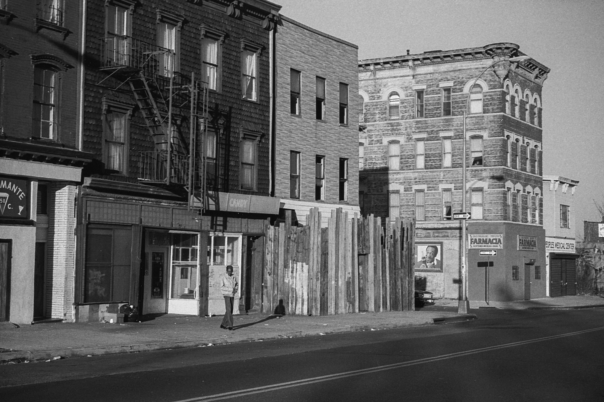

Myrtle Avenue, Five Hundred Block
It must be late in the afternoon as we look, once again, at the five hundred block of Myrtle Avenue, Brooklyn. This is between Pratt Institute and the Navy Yard.
One image by Richard Koenig; taken in the fall of 1981.